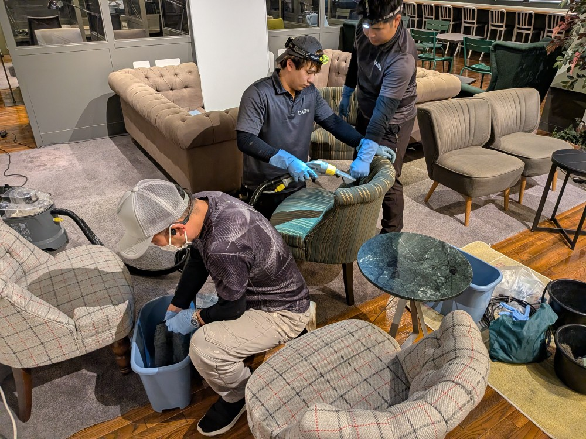
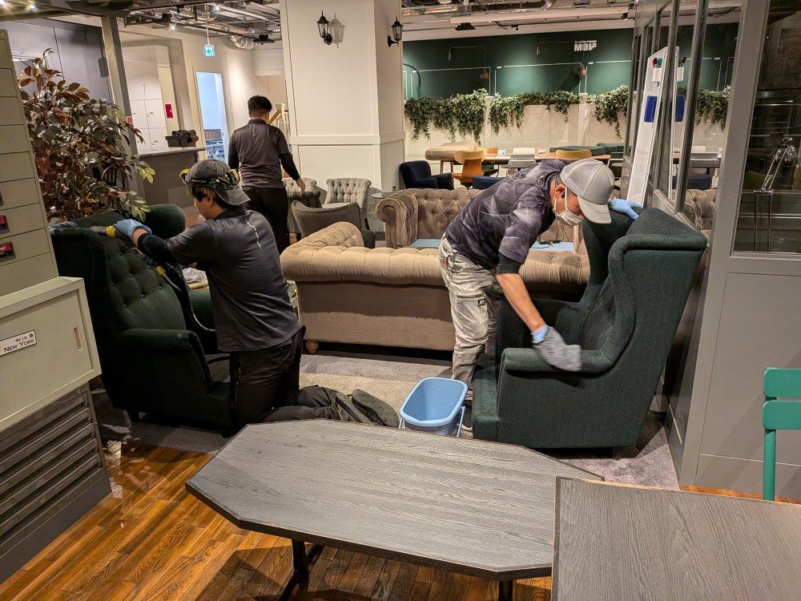
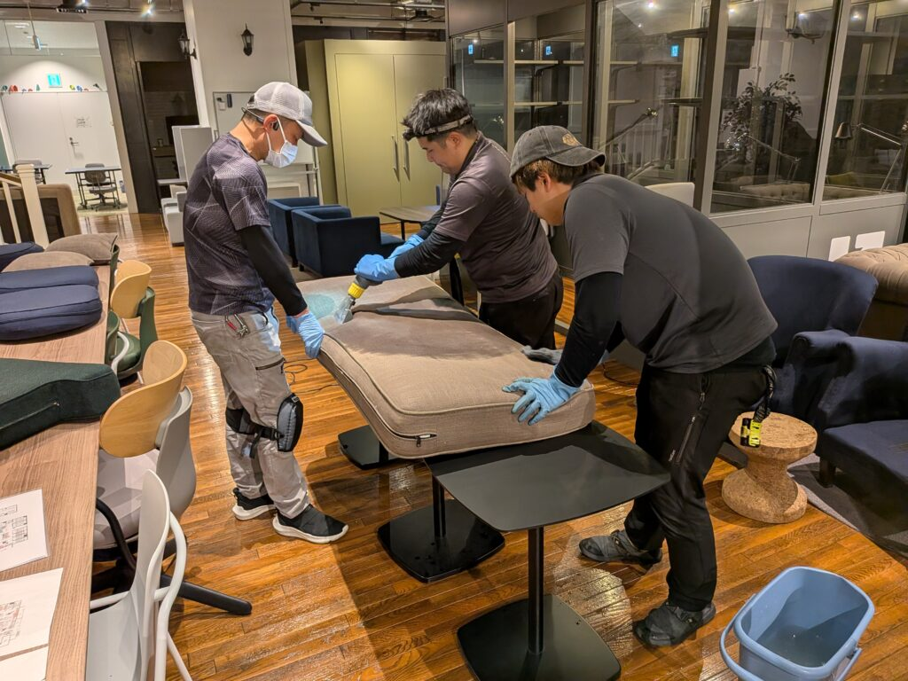
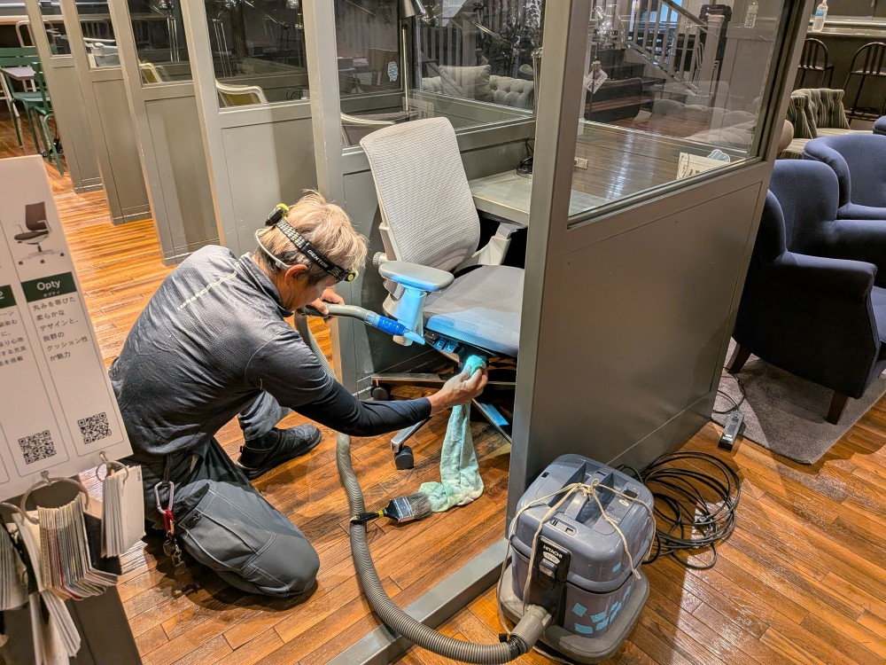
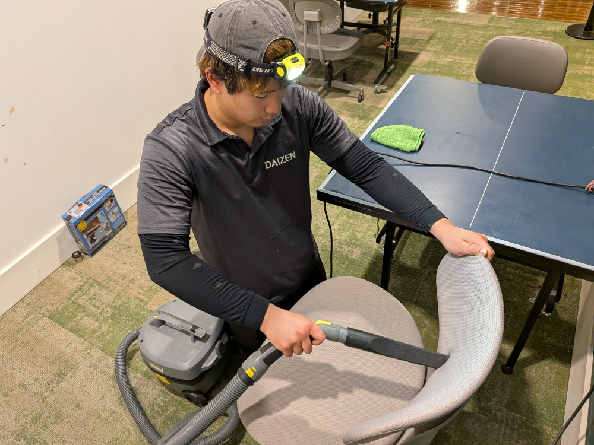
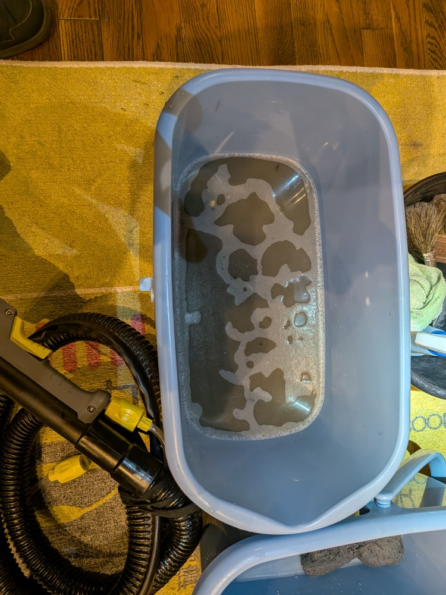
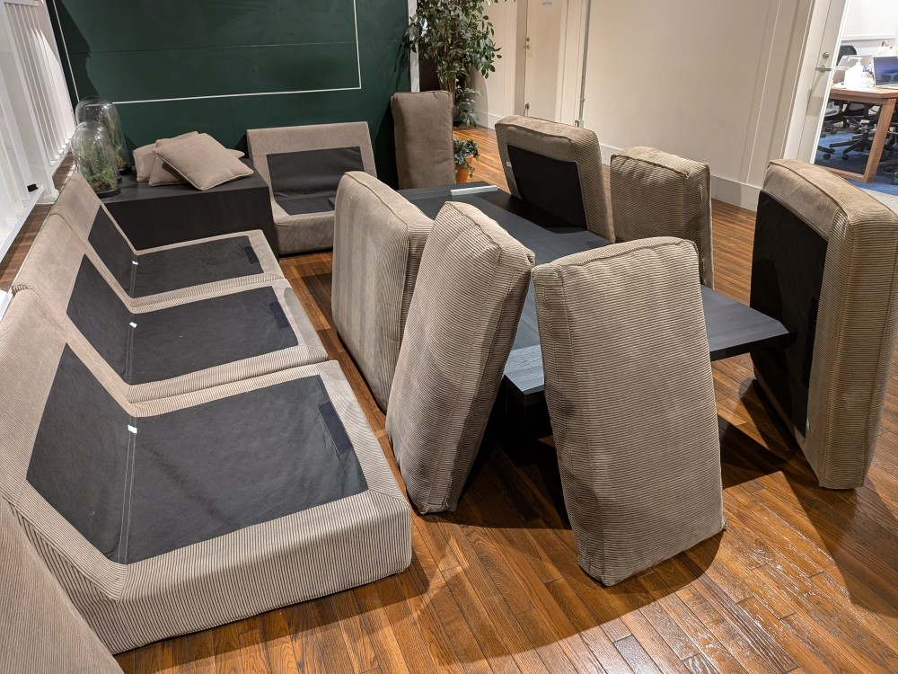
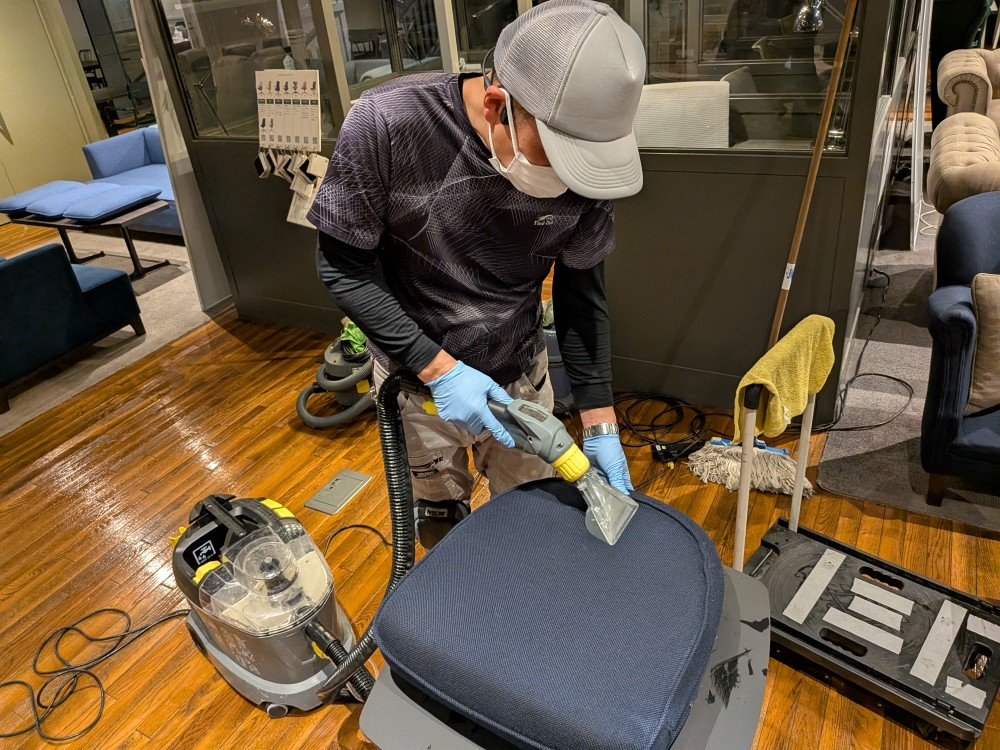
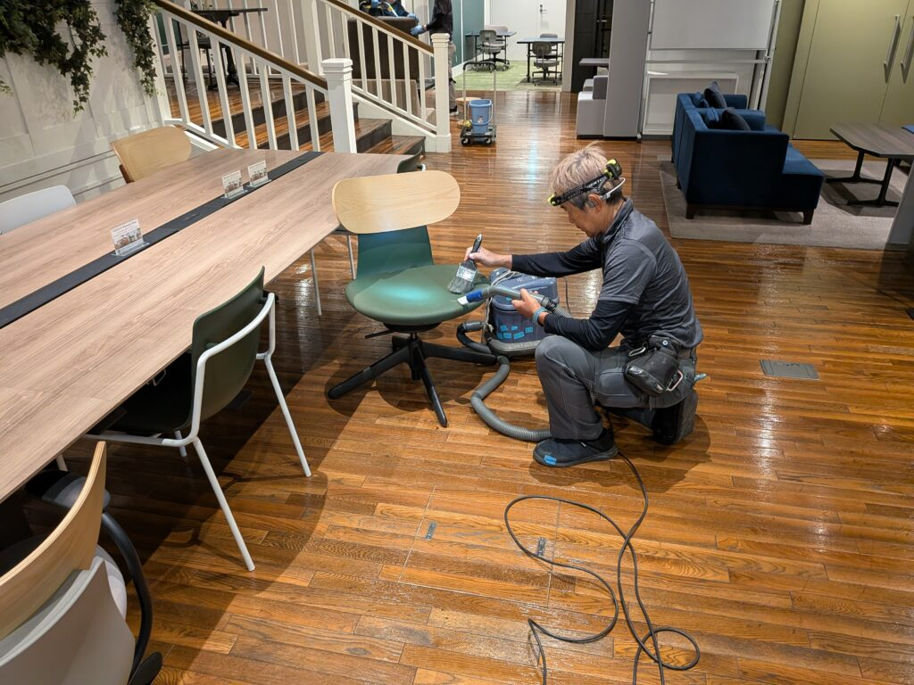

東京都渋谷区のリピーターさん、ヒカリエのM様オフィスソファの年末大掃除・ソファ洗浄クリーニングをチームで実施しました！

東京都渋谷区のリピーターさん、ヒカリエのM様オフィスの年末大掃除・ソファ洗浄クリーニングをチームで実施しました！椅子が60セット以上、ソファセットも相当な数量がありますので、4人チームでソファセットと椅子セットを準々に、丁寧に洗浄クリーニングを実施して行きます。相当汚れた汚水がごっそり採取されて、みるみる綺麗になって行きます!







